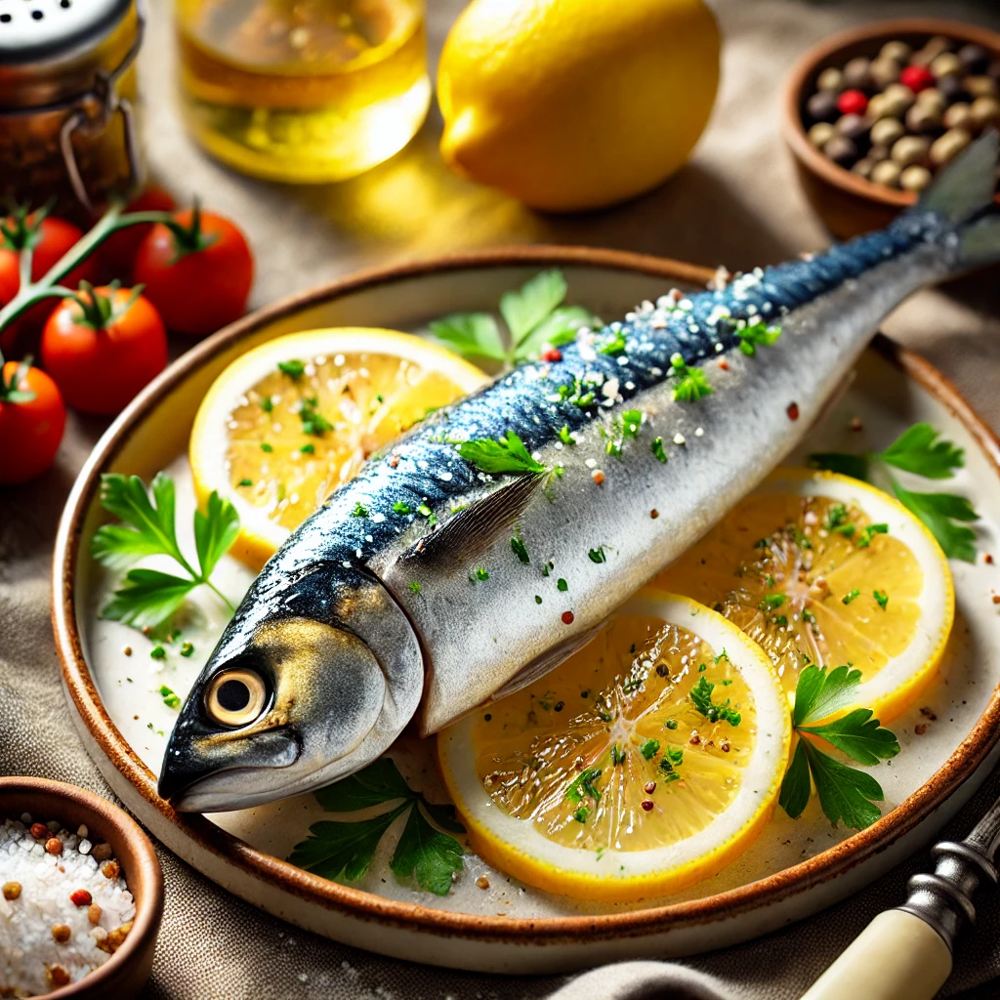
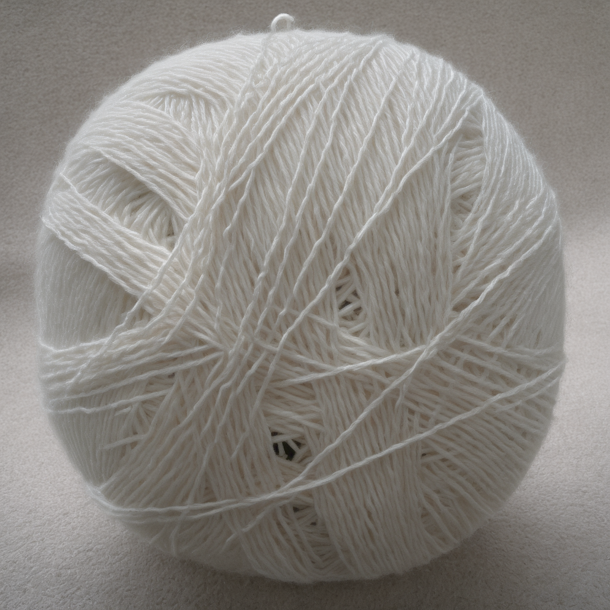

Felix

CEO och mästerkock
Findus
Delägare och inköpare
Delikatess
Hos oss kan man njuta av havets läckerheter, tillsammans med våra fyrbenta medarbetare!
· Toast Skagen
· Blini med Kalix löjrom
· Matjessill med tillbehör
· Silltallrik
· Hummersoppa med tillbehör
· Hummer
· Ankleverterrin med tillbehör.
Hitta till oss
Vi är belägna centralt i Linden Köpcentrum.
Öppettider vardagar: 10:00 - 20:00
Öppettider helg: 10:00 - 21:30 (sista beställning)